Catalysis • Air-Sensitive Synthesis • Mechanistic Studies
Exploring magnesium-based main-group organometallic systems through synthesis, mechanistic investigations, and catalyst development.
My research combines synthetic main-group chemistry, mechanistic investigations, and catalyst development using air-sensitive organometallic complexes.
Bis(guanidinate)-supported reactive magnesium complexes.
Hydroboration reactions supported by mechanistic investigations.
Advanced glovebox and Schlenk-line techniques.
Selected graphical abstracts showcasing representative research contributions.
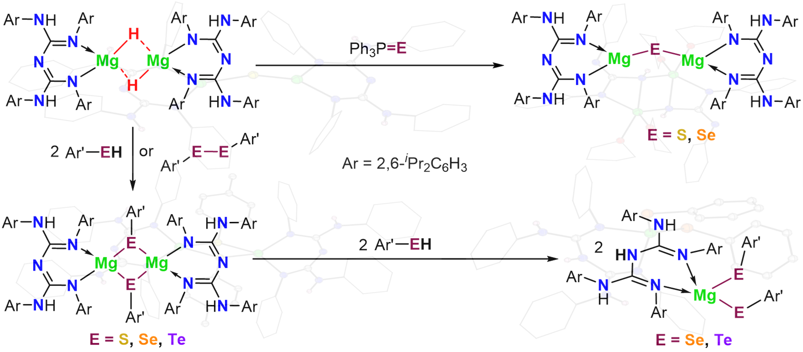
Inorg. Chem. • 2026
DOI: 10.1021/acs.inorgchem.6c03268
View Publication →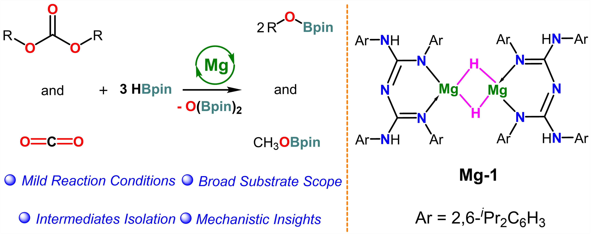
Cat. Sci. Technol. • 2026
DOI: 10.1039/d6cy00898d
View Publication →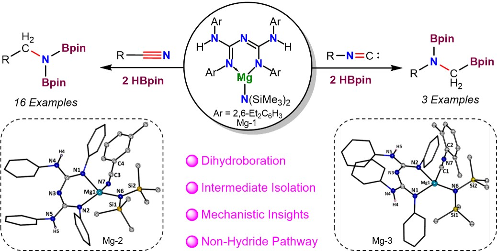
Mechanistic insights established through isolated intermediates, SCXRD studies and kinetic investigations.
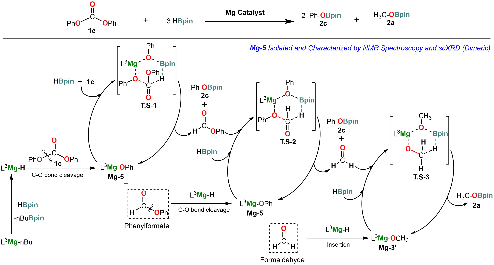
Isolation of reactive intermediates enabled construction of a detailed catalytic pathway for the magnesium hydride mediated reduction of organic carbonates.
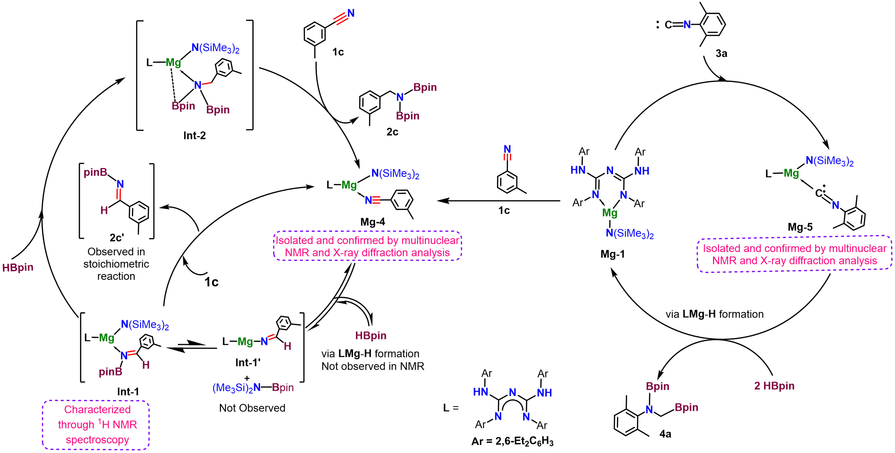
A new activation pathway for nitriles and isocyanides established through experimental evidence.
Selected single-crystal X-ray diffraction structures representing key intermediates, catalysts, and novel magnesium complexes characterized during my doctoral research.
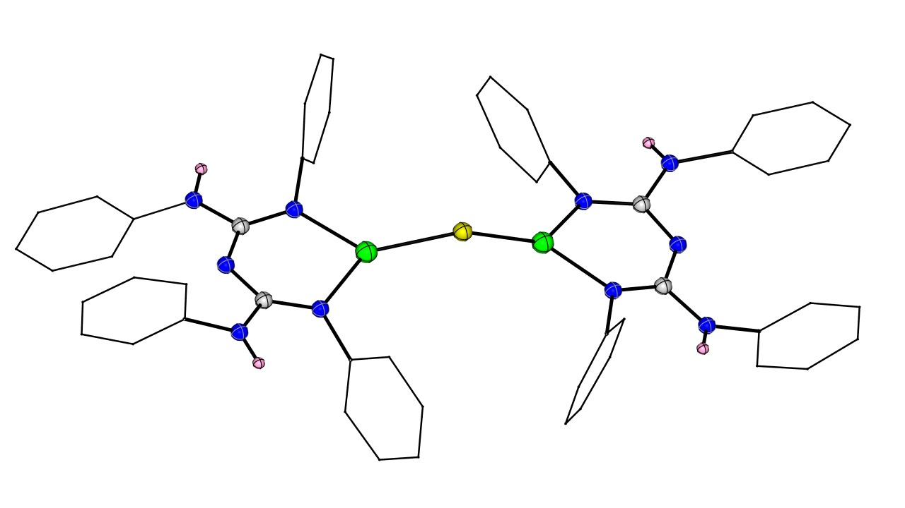
Sulfur Bridged Magnesium Species Obtained via Sulfide transfer Reaction.
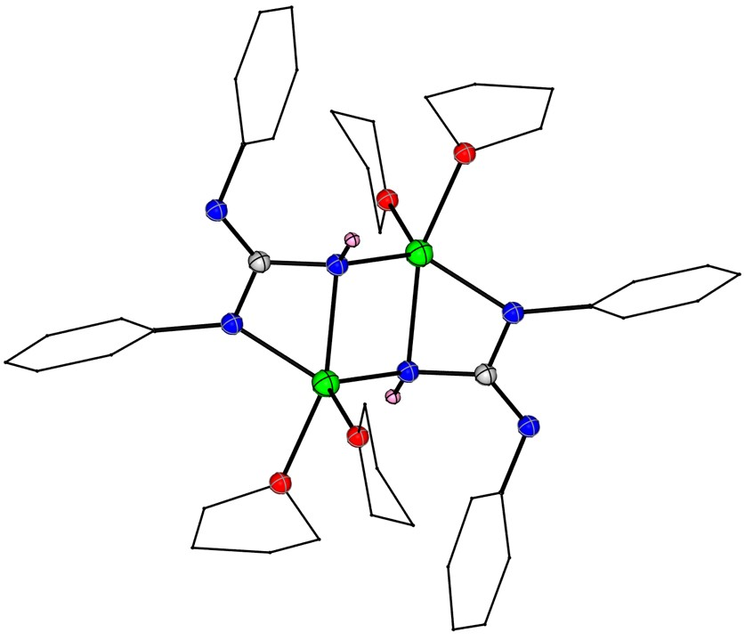
Bis(Guanidine) to Disubstituted Guanidine Transformation.
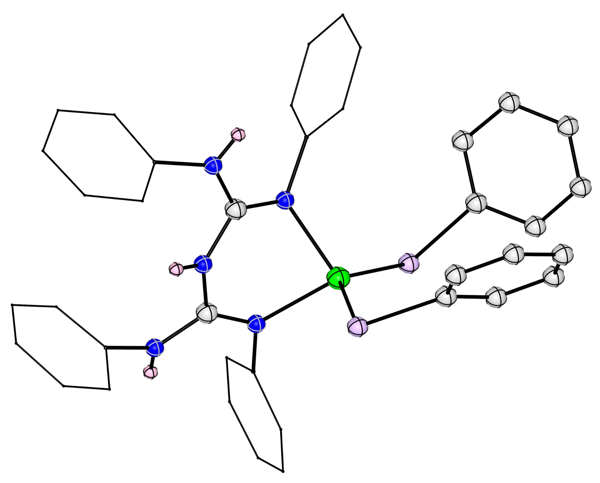
Isolated Rare Magnesium Bis-chalcogenolate via insertion of Aryl Chalcogenol into Magnesium Mono-chalcogenolate.
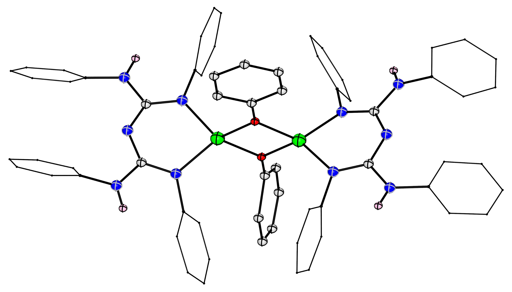
Catalytically relevant species captured crystallographically.
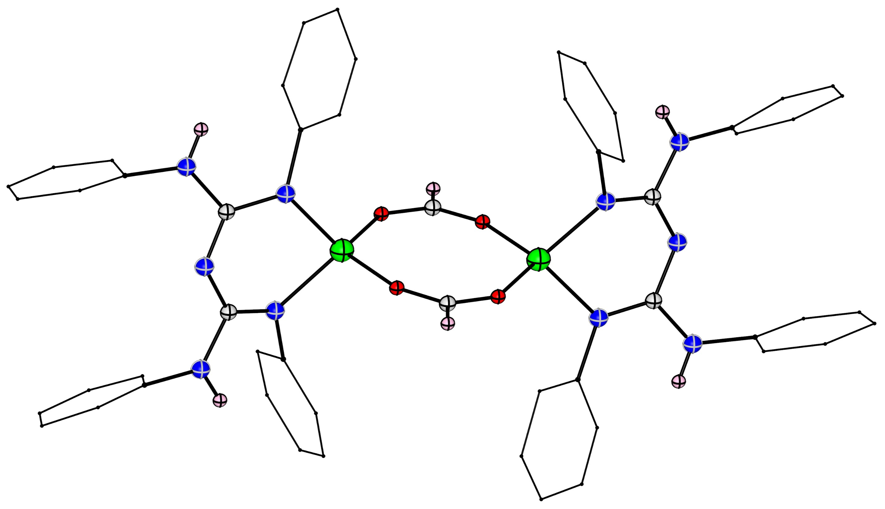
Isolated from the Reactivity of Reactiove Hydride with Carbon Dioxide.
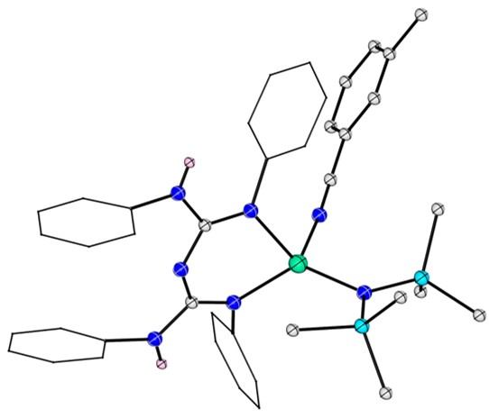
Representative New Structure structure from published work.
International conferences, research presentations, and recognition throughout my PhD.
4th International Conference on Main Group Molecules to Materials
Poster Presentation2nd International Conference on Main Group Synthesis and Catalysis
Poster Presentation1st Department of Atomic Energy Conclave
Poster Presentation1st International Conference on Main Group Synthesis and Catalysis
Poster PresentationXIX International Symposium on Modern Trends in Inorganic Chemistry
Poster Presentation2nd International Conference on Main Group Molecules to Materials
Attendee